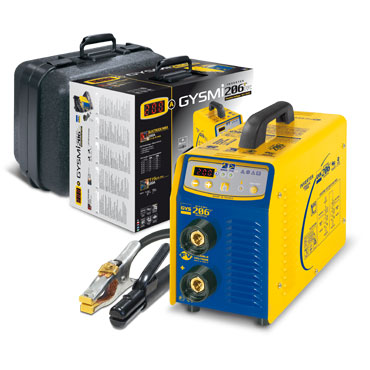
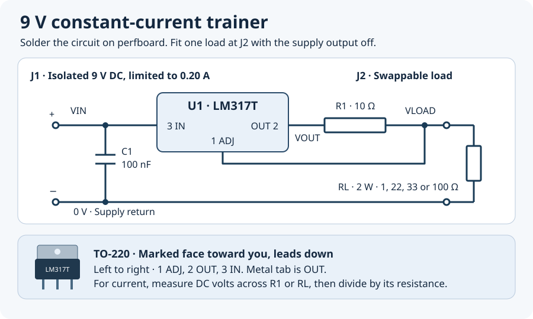

Design a DC stick welding set and build its current-control trainer
Start your own DC MMA design at the point that makes it a welder: regulated current as the load voltage changes. Build that function from components on a 9 V bench, then use it to specify a full-size set.


Photo by Bruno Bouygues. Original photograph · CC BY-SA 3.0.

Watch. Identify the power stage, current sensing and control blocks on a commercial inverter before wiring the low-energy trainer. Haseeb Electronics · Inverter welder functions and troubleshooting.
Specify the machine you want
Choose DC manual metal arc welding (MMA, also called stick or SMAW) because it matches the compact inverter machines in W01. A power source can hold approximately the same current across a useful voltage range. With an open electrode there is no load current, and output voltage needs its own limit. In a sustained stick condition, the control has to limit the low-voltage current and respond over time. Lincoln Electric · Constant-current welding characteristic.
For a design exercise, write an output target of 100 A at 24 V for 2.40 kW of arc-side power. At a hypothetical 85% efficiency, input real power at that point is about 2.82 kW and heat lost in the equipment is about 424 W. This sets up the thermal and input-current problems. Specify rated current with voltage, supply conditions and duty cycle. Specify permitted open-circuit voltage and any voltage reduction feature with the applicable evaluation lab.
Buy the 9 V trainer parts in India
Build one board with two screw terminals so you can change loads and service the circuit. The parts and readings below describe a 125 mA classroom trainer powered from an isolated, current-limited bench supply.
| Part and quantity | What to buy and check | India source and example price |
|---|---|---|
| U1 · 1 regulator View regulator | STMicroelectronics LM317T, through-hole TO-220. With the marked face toward you and leads down, pins are ADJ, OUT, IN from left to right. The metal tab is OUT. | element14 · 9756027 · ₹79.88 · Mouser · Package photo. |
| 1 heatsink and mounting kit View heatsink | Assmann V2003X, 19 × 22 × 19 mm, 22 K/W nominal. Buy a suitable TO-220 insulating thermal pad, shoulder washer and screw hardware that fit both parts. With the sink mounted, meter-check isolation between the sink and the metal tab. | Robu · V2003X · ₹93 · Assmann · Photo and drawing. |
| R1 + RL · 5 resistors View resistor types | 2 W axial, ±5% or tighter. Buy 10 Ω for R1 and one each of 1 Ω, 22 Ω, 33 Ω and 100 Ω for the loads. Vishay PR02 is one series to ask for. Label each load by value before installing it. | element14 · PR02 series · 33 Ω sample · ₹20.32 · Photo · David Ludovino, CC BY-SA 3.0, resized. |
| C1 · 1 capacitor View capacitor | 100 nF, 50 V, leaded ceramic disc. Fit across IN and supply return close to U1. | Robu · 662929 · ₹1.22 · KTRON · Alternate and photo. |
| 1 board + J1 and J2 View perfboard View terminal | 50 × 70 mm isolated-pad perfboard on a 2.54 mm grid and two 2-pole, 5.08 mm pitch screw terminals. Buy four nylon standoffs that fit the board, insulated 22 AWG wire, labels and a small nonconductive base. | Electrobot · GPB57CM · ₹46 · Robo Bazar · J1 + J2 · ₹14/pack · Board photo · Klaus-Günter Leiss, CC BY-SA 3.0. |


The six priced lines total ₹254.42 on the listings checked on 22 November 2026. Add four more resistors, heatsink mounting hardware, standoffs, wire, the base and applicable shipping and tax. Compare delivered quotes if buying for a class.
Set out the tools and read the drawing
Use a soldering station and stand, solder, flush cutters, wire stripper, small screwdriver, digital multimeter with clip leads and a contact thermometer with an electrically insulated probe. Use a bench supply with an isolated adjustable output and a current limit you can set at 0.20 A. The Robu A3005 listing was ₹5,029 as a bench-equipment price reference. Confirm the output characteristics on the specific unit you use. Robu · Bench supply listings.


Tool photos. Soldering · Bill Earl and Adafruit, CC BY-SA 3.0 · Meter · Anselm Schüler, CC BY-SA 4.0 · Bench supply · Derrick Parker, CC0.



Watch the assembly methods. In Pier Aisa’s Italian-language demonstration, follow the resistor and ADJ wiring of the same regulator topology. Use this lesson’s resistor and test values. Watch the Make video for how to join separate pads by hand. Pier Aisa · LM317 current regulator · Make · Perfboard prototyping.
Assemble and test the board
- Dry-fit and label. Point both terminal wire entries outward. Put J1 and J2 at opposite ends of the board and U1 where the heatsink clears both terminals and the base. Mark J1 +9 V and 0 V and J2 LOAD and 0 V. Use nylon standoffs at the board mounting holes. Place the two low-voltage leads from the bench supply so they cannot pull the board over.
- Solder from the wiring drawing. Use a black jumper for the 0 V return from J1 to J2. After soldering U1 and C1, connect pin 2 to one side of R1. Join the other side of R1, pin 1 and J2 LOAD. Leave probe loops at VIN, VOUT, VLOAD and 0 V, spaced to take insulated clips. Trim leads and inspect both sides for loose wire and bridging.
- Check cold. With J1 disconnected and J2 empty, verify J1 + to pin 3, J2 LOAD to pin 1 and the 0 V return from J1 to J2. Measure about 10 Ω across R1 in a powered-off circuit, or measure the part before fitting for the most direct reading. Check that the input is free of a hard short and that the heatsink is electrically isolated from the tab. Measure and record all four loose loads. For 1 Ω, compensate the meter-lead resistance using REL or a four-wire meter.
- Power up with 22 Ω. Set the isolated bench output to 9.0 V and 0.20 A. With the output off, connect the 22 Ω load at J2 and confirm its leads cannot touch. Turn on. If the supply enters current limit, turn off and inspect the wiring. Clip the voltmeter across R1 for VR1 and across the load for VLOAD. Calculate each current using the measured resistance. Expect roughly 125 mA with a nominal 10 Ω R1. A practical checkout range is 114–137 mA at 22 Ω with a ±5% set resistor, based on the reference and resistor tolerances. Record VIN and VOUT to find the regulator's voltage headroom.
- Repeat under load. Turn the output off before changing resistors or moving clips. Test 33 Ω and then 100 Ω. The higher resistance can reduce the regulated current because 100 Ω at 125 mA would require 12.5 V at the load alone. Test 1 Ω last on a cool board with the heatsink fitted. Take a brief stable reading with the thermometer attached and stop at 50 °C at the sink for this exercise. Allow the board and resistors to cool before handling.
- With the supply off, remove the load. Use the meter to observe the no-load output during a brief power-up, then power off. The isolated bench supply bounds the available voltage. An LM317 current regulator by itself provides no specified open-electrode or anti-stick function for an arc welder.
Log the measured load resistance, VIN, VOUT, VR1, VLOAD, both inferred currents, sink temperature and time after turn-on. At 1 Ω and nominal regulation, the calculated load loss is 0.016 W and the regulator loss is about 0.95 W. At 33 Ω the corresponding estimates are 0.52 W and 0.45 W. Estimate regulator loss as (VIN − VOUT) × I. Use the thermal resistance of the specific package, pad and heatsink to evaluate a longer run.
Predict the load curve before measuring it
Download the ngspice model and 100 computed load points. Run ngspice -b low_voltage_current_source.cir. The model assumes 2.5 V dropout and a small continuous transition out of current regulation. It models DC loads and omits LM317 tolerance, device heating and circuit dynamics.
| Dummy load | Modeled voltage | Modeled current | Interpretation |
|---|---|---|---|
| 1 Ω | 0.125 V | 125 mA | Near-short surrogate and highest regulator heating among these samples. |
| 22 Ω | 2.750 V | 125 mA | Current regulation with headroom. |
| 33 Ω | 4.125 V | 125 mA | Same nominal current at a higher load voltage. |
| 100 Ω | 5.904 V | 59.0 mA | Voltage headroom runs out before the current reaches the setting. |
Turn the bench results into a full-size design brief
| Block | Design output to ask for | Evidence before release |
|---|---|---|
| Input and isolated power stage | Input protection, inrush handling, auxiliary supply, isolation system, inverter topology and thermal design with qualified suppliers. | Drawings, component ratings and independent electrical, abnormal operation and EMC assessments. |
| Output rectifier, choke and leads | Output voltage and current range, ripple, connector ratings, reverse-recovery and temperature margins. | Load-bank voltage and current points. Repeat at the rated duty and through fan or cooling faults as the lab specifies. |
| Current sensing and protection | Calibrated feedback, independent fast overcurrent protection, limits at open output and a defined stuck-electrode and recovery policy. | Bench fault cases for lost feedback, low output and over-temperature, then scoped tests on an instrumented prototype under a competent design team. |
| Product and service | Model and revision, serial number, matching leads and holder, enclosure, installation instructions and service access scheme. | Accredited-lab records and a production check under the applicable Indian standard. After electrical verification, a trained welder runs a documented coupon trial with local fume control and welding PPE. |
Commission a qualified power-source designer or OEM to develop the enclosed production prototype against your brief. Bring your load table, current range and duty requirement to BIS and your test lab to confirm the current edition, classification and applicable licensing obligations. India’s Gazette lists the 2024 revision of IS 16593 Part 1, based on IEC 60974-1:2021. For an existing machine follow its own test and recommissioning procedure. BIS Gazette notice, item 8 · IEC welding power sources · W06 · Return to service.
W09 · Build the chassis and assemble a 230 V stick welder